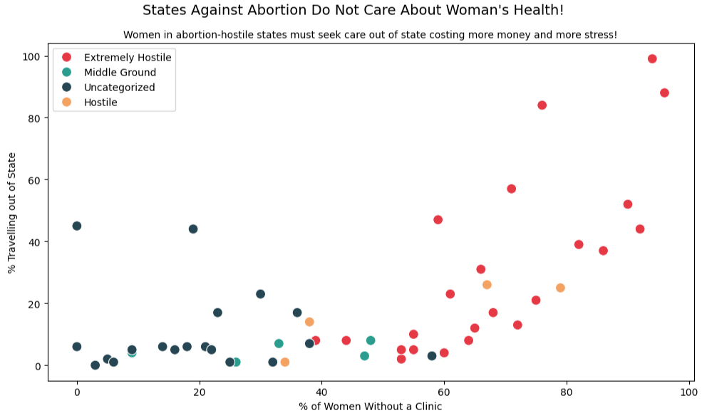
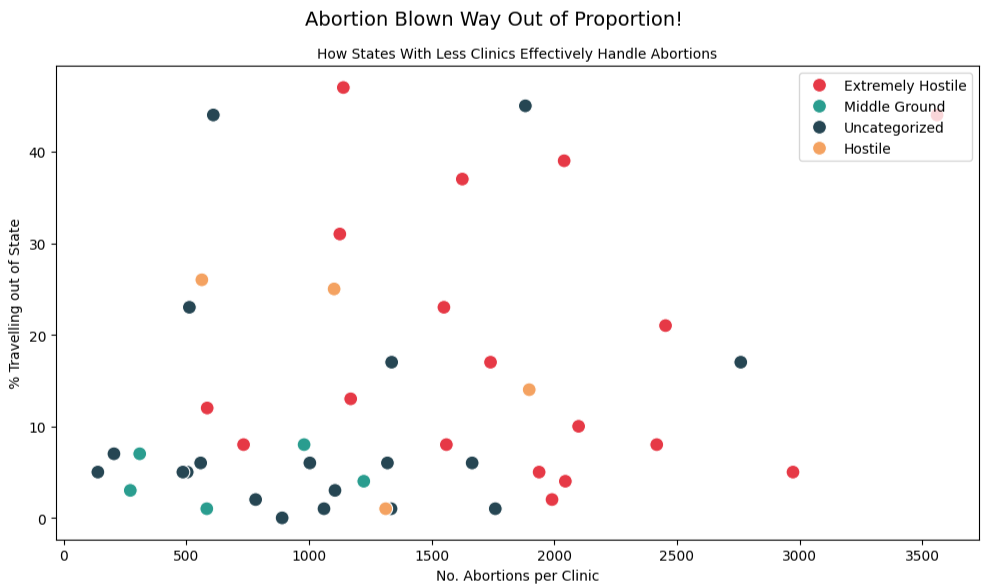

Proposition: Access to abortion clinics is essential for reducing out-of-state travel and improving healthcare equity.
All categories come from: GuttmacherFOR the Proposition

Design Decisions and Rationale:
- Categories (2): These were used to show readers the state's stance on abortion to further explain why its datapoint might be where it is.
- Suptitle (-1): The data and visualization have nothing to do with this. I am equating women's health to abortion in order to persuade the reader to be more sympathetic to women and take a specific stance when looking at the visualization.
- X Feature (1): This feature really describes how great the disparity is between non-hostile and hostile states in terms of access to abortion clinics. From the graph you can see this feature almost completely splits the two in half having one side with non-hostile states with lots of access and hostile states with little to no access.
AGAINST the Proposition

Design Decisions and Rationale:
- Feature Engineering (-1): Hostile states will obviously have less abortion clinics than more progressive states. This can work in the arguments favor as you can argue that fewer clinics can handle more abortions.
- Data Filter (-2): Intentionally do not show all of the data. There are three extremely hostile states in which more than 90% of women travelled out of state so leaving these datapoints hidden helps the argument.
- Categories (2): These were used to show readers the state's stance on abortion to further explain why its datapoint might be where it is.
Final Reflection
Making these two charts helped me see how easy it is to change someone’s opinion just by how data is shown. The first chart,
which supports the idea that access to abortion clinics is important, was easy to make. The data clearly showed that women in
states with fewer clinics often have to travel out of state. I chose a strong title and used colors to show which states were
more or less supportive of abortion access. These design choices helped make the argument more emotional and clear.
The second chart, which argues against the idea, was harder to create. I had to leave out some extreme data points and
focus only on certain features, like the number of abortions each clinic handles. This made it look like states with fewer
clinics were still doing okay, even if that wasn’t the full story.
From this project, I’ve learned that being honest in how we show data is really important. It’s okay to try to persuade people
, but we shouldn’t give misinformation. I belive that "ethical analysis and visualization" is reporting all of the data
despite what it might say. I think persuasive visualizations are fine as long as they’re fair and don’t leave out important
information. Misleading ones, on the other hand, are unfair because they change how people understand
the truth.